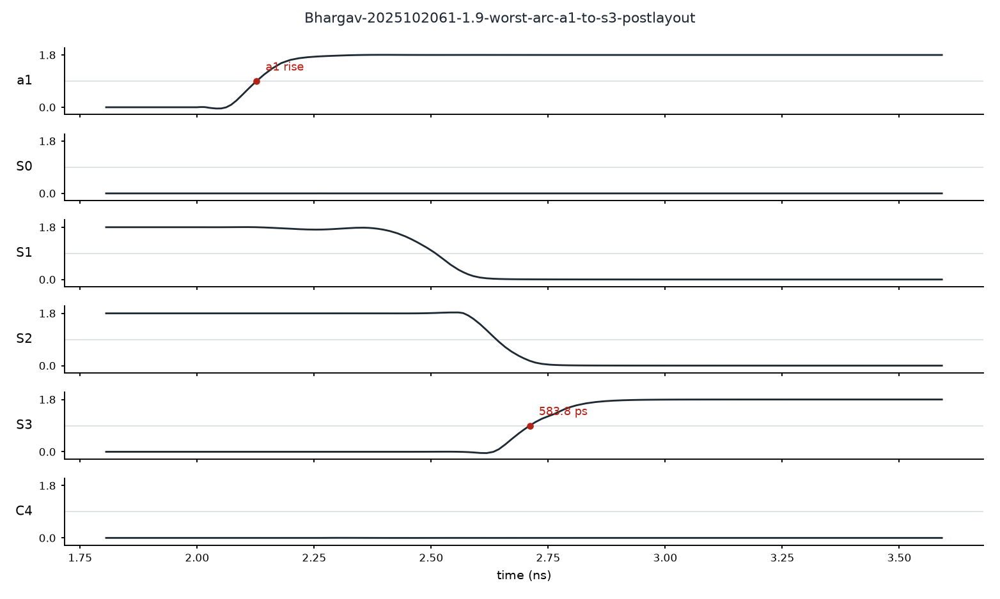
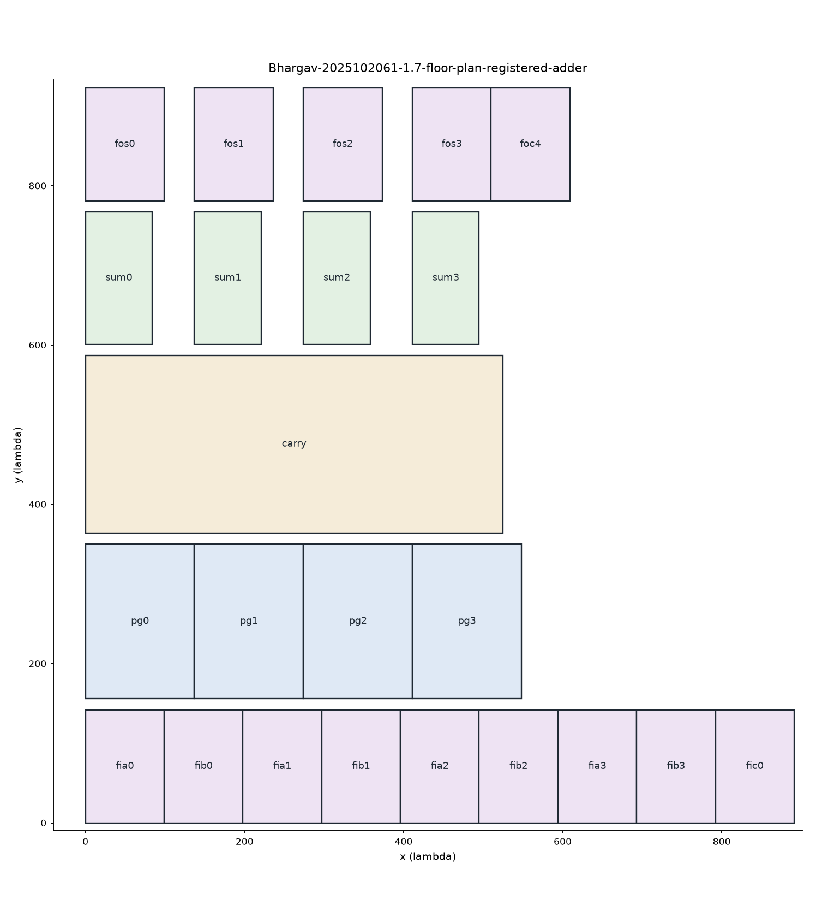
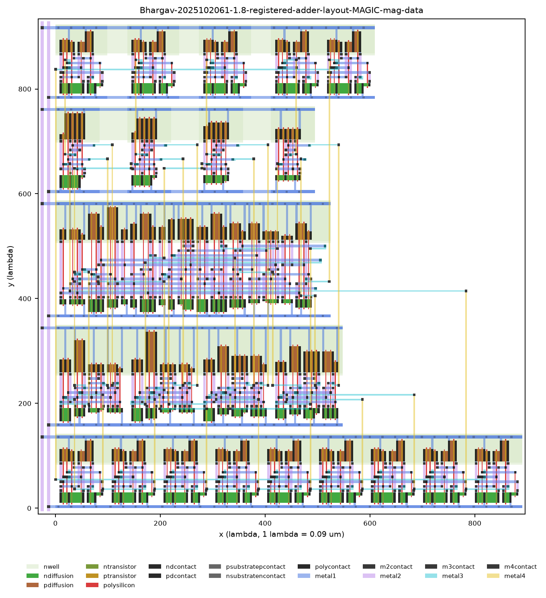

How the 4-bit carry look-ahead adder was built
From the idea of a carry to a laid-out, verified chip in TSMC 180 nm at 1.8 V. Every circuit is explained, every problem met along the way is listed with its fix, and every number comes from the project's own simulations.
01The problem in plain words
The task is to build a circuit that adds two 4-bit numbers, A and B, plus a carry-in C0. It gives a 4-bit sum S and a carry-out C4. The inputs are captured by flip-flops on a clock edge, and the outputs are captured by flip-flops on the next edge.
The main goal is the smallest post-layout worst-case delay: the slowest the adder can ever be, measured on the real drawn layout with its wires. Area and power come second, as trade-offs.
02How the work was done
The work ran in phases. Each phase ended only when its check passed.
| Phase | What was made | Check that closed it | Explained in |
|---|---|---|---|
| Planning | Papers read, transistors measured, delays estimated | Candidate list and roadmap | 04 |
| 0 | A Python generator for netlists, drawings and layouts | Generated inverter matched measurements | 11 |
| 1 | Gates and blocks | Transistor-level truth tables | 04 |
| 2 | Six candidate adders | All 512 input combinations correct | 05 |
| 3 | Architecture comparison | Every candidate searched over 4608 transitions | 05, 09 |
| 4 | Transistor sizing | Stable worst delay, trade-off data | 10 |
| 5 | Flip-flop | TSPC chosen and characterised | 07 |
| 6 | Registered circuit | Clock limit found on 264 vectors | 08 |
| 7 | Block layouts | Every block DRC clean, LVS match | 11 |
| 8 | Full layout | DRC 0 and LVS match on the whole circuit | 11 |
| 9 | Post-layout measurements | Schematic against post-layout table | 13 |
| 10 | Report | 27-page PDF built from the stored results | 13 |
03Adding, and why carries are slow
Adding binary numbers works like adding on paper. Each column adds two bits and the carry from the column to its right, then passes its own carry left.
How to read the equations on this page:
Each bit position can do one of two useful things to a carry:
Putting the carry rule into itself removes the chain. C4 then has one term for each way a carry can reach the top:
The last term ANDs five signals. Built as one gate, it needs five transistors in series, which is slow. The rest of the design is about arranging this equation so the slowest real path is as short as possible.
04Transistors and gates
A static CMOS gate has two networks. PMOS transistors (blue) connect the output to VDD, and NMOS transistors (green) connect it to ground. For every input pattern exactly one network conducts, so the output is always driven and no current flows once it settles.
- Transistors in series must all be on to conduct. In parallel, any one is enough.
- The two networks are opposites: series in one becomes parallel in the other.
- Every single CMOS gate inverts, which is why many signals on this page carry a bar.
Series transistors share one current path, so each extra one adds resistance. A 5-high PMOS stack measured 4.6 FO4 in its worst input position. The input's position in the stack also matters: up to 33% difference in NAND5 and 39% in NOR5. So the latest-arriving signal is placed nearest the output.
FO4 is the delay of an inverter driving four copies of itself, a standard unit of gate speed. Measured on this model: 85.5 ps, with τ = 11.9 ps.
Logical effort estimates a gate's delay before simulating it:
These estimates only ranked the designs. Every decision was then made by simulation.
Domino logic can be faster for wide adders, but its inputs may only rise while it evaluates. With inputs launched on the clock edge, that forces the logic to be split across clock phases, and the course timing formula assumes plain combinational delay. Domino was rejected on this argument. A domino prototype was never simulated.
Every logic style considered
The adder's gates are all static CMOS. Transmission gates and one dynamic circuit were built and measured where they competed. The other main styles were first set aside on known drawbacks, then checked pre-layout afterwards in a small test, below.
| Logic style | Used? | Where, or why not |
|---|---|---|
| Static CMOS | Yes | Every gate of the final adder, including compound AOI and OAI gates and the dual-rail AOI22 sum |
| Dynamic, TSPC | Yes | The flip-flop. It stores its state as charge on internal nodes (see 07) |
| Transmission gates | Measured, not kept | TG sum gate: smaller but slower. Manchester chain, candidate E: slowest at unit size. TG master-slave flip-flop: lost to TSPC. Also in the test below |
| Domino | Tested below, not used | Inputs must only rise during evaluation, and it needs a precharge phase every cycle |
| Pseudo-NMOS | Tested below, not used | Draws steady current whenever the output is low, and its low level depends on transistor ratios |
| CPL, a pass-transistor style | Tested below, not used | NMOS passes a weak high level, so it needs restoring inverters |
| DCVSL, also called CVSL | Tested below, not used | Dual-rail with cross-coupled PMOS. The AOI22 sum also uses both polarities, but it is ordinary static CMOS |
| GDI | Not tested | Needs separately biased transistor bodies, which a standard CMOS process does not give |
| Dual-mode logic, MT-CMOS | Not tested | Need low-threshold transistors, which the provided model does not have |
| Adiabatic logic | Not tested | Designed to save power, not to be fast, and needs a ramped power clock |
Pre-layout check: one carry chain in each style
To test whether another style would beat static CMOS, the same small circuit was built in each style and simulated in ngspice with the TSMC 180 nm model. This was a schematic-only test, with no layout.
- The circuit. Four carry stages in a row, C0 → C4, each computing g + t · C. Every bit is set to propagate, so a change on C0 ripples through all four stages. This is the hint-vector path.
- Same conditions. The same C0 driver for every style. Each carry drives one unit inverter, or one per rail for dual-rail styles, standing in for a sum gate, and C4 drives four.
- Best version of each style. Transistor sizes and each style's own settings were swept: the pull-up ratio for pseudo-NMOS, buffers and pull-up size for DCVSL, restorers for CPL, and foot and keeper choices for domino. The fastest correct version is reported. In total 409 versions were simulated.
- Correct means full swing. C4 must settle within 10% of each rail, so its low level must be at most 0.18 V. Power is the circuit's own supply, with C0 toggling every 2 ns. The domino clock buffer is counted.
| Style, best version | C0 → C4 delay (ps) | vs static | Power (µW) | Transistors | Catch |
|---|---|---|---|---|---|
| Pseudo-NMOS | 235.8 | 33% faster | 6056 | 16 | 16 times the power. Low level 0.175 V, right at the limit |
| Domino, footless | 328.6 | 6% faster | 1417 | 30 | Rising edge only, plus 275 ps of precharge each cycle |
| Static CMOS, mirror carry | 349.7 | — | 371 | 24 | Full swing, no steady current |
| Domino, footed | 377.2 | 8% slower | 865 | 34 | Rising edge only |
| Transmission-gate mux | 422.5 | 21% slower | 271 | 24 | Needs an inverter each stage |
| DCVSL | 578.8 | 66% slower | 1785 | 48 | Cross-coupled pull-ups fight each switch |
| CPL | 603.7 | 73% slower | 226 | 40 | Weak NMOS high level needs restoring |
Transistor counts are for the four stages. Delay is the slower of the rising and falling transition, except for domino, which only switches on the rising edge while it evaluates.
Pseudo-NMOS is the only clearly faster style. Its pull-up is one small PMOS that is always on, so each input drives only NMOS gates and loads the previous stage much less. The cost is current flowing from VDD to ground whenever an output is low: 6056 µW against 371 µW here.
Its speed depends on how low "low" must be. Its best result has a 0.175 V low level, at the edge of the limit. With a stricter limit it loses its lead:
| Low level allowed | Best pseudo-NMOS delay (ps) | Power (µW) |
|---|---|---|
| 0.18 V | 235.8 | 6056 |
| 0.12 V | 290.6 | 3588 |
| 0.09 V | 401.8 | 4464 |
Footless domino is only 6% faster, counts only the rising edge, and needs a precharge phase and monotonic inputs. In a registered adder, that phase costs part of every clock cycle. Footless domino is also only safe because no pull-down path is on during precharge, which holds in this test but not for every input pattern.
DCVSL, CPL and transmission gates were all slower than static CMOS.
Limits of this test. It covers one ripple carry chain, pre-layout. The real adder is a prefix tree whose worst path starts at an a input, so the size of any gain there would need its own design and layout. Static CMOS stays the choice because it has full swing, no steady current and no clock inside the adder, and the prefix design keeps every stack at 2 or less.
05Six candidate designs
A candidate is one complete trial design of the whole adder. Instead of guessing the best circuit, six were built, checked and measured under the same conditions, and one was kept.
Names are only labels. C1 to C4 are design numbers from the planning table, R is the design planning first recommended, and E is a Manchester chain. Candidate C4 is a whole adder. The carry C4 is a single signal. They only share a name.
| Candidate | How its carries are built | Tallest stack | Transistors |
|---|---|---|---|
| C1 | Textbook: XOR propagate, every carry from NAND gates feeding a NAND gate | 5 | 208 |
| C2 | One large complex gate for each of the four carries | 5 | 170 |
| R | One complex gate each for C1 to C3. C4 from a mirror gate fed by C2 | 4 | 172 |
| C3 | Gates for C1 and C2. C3 and C4 from mirror gates fed by C2 | 3 | 170 |
| C4, used | Prefix tree of small 2-input steps, with C0 added last | 2 | 194 |
| E | Manchester chain: the carry passes through transmission gates bit by bit | 4 TGs | 144 |
A mirror gate is a compact gate that computes a carry straight from raw a and b and a lower carry.
One carry, written four ways
All four forms below compute C3, the carry into bit 3, and always give the same answer. What changes is the circuit.
How they were compared
- Same conditions. Every gate at unit size, with the same model, supply, input drivers and output load.
- Correct logic first. Each design passed all 512 input combinations at transistor level.
- Same search. Each ran all 4608 single-input transitions (see 09). The slowest is its worst delay.
- Leaders sized and laid out. Unit size is only a first ranking, so the best went on to sizing and layout, where wires count.
| Unit size, schematic | Worst delay (ps) | Worst from C0 (ps) | Hint vector (ps) | Transistors |
|---|---|---|---|---|
| C4 | 658.9 | 388.3 | 360.0 | 194 |
| R | 727.0 | 618.0 | 574.2 | 172 |
| C2 | 764.0 | 643.8 | 577.2 | 170 |
| C1 | 771.3 | 488.0 | 421.4 | 208 |
| C3 | 796.4 | 689.6 | 623.5 | 170 |
| E | 799.8 | 629.3 | 629.1 | 144 |
| After sizing and layout | Post-layout (ps) | Adder area (µm²) | Outcome |
|---|---|---|---|
| C4 with AOI22 sums | 579.88 | 2936.9 | Used |
| C4 with TG sums | 596.66 | 2498.5 | Smaller, slower |
| R with TG sums | 645.59 | 3425.8 | Slower and larger |
| R with AOI22 sums | none | none | 586.1 ps schematic, layout failed LVS |
| C2 with TG sums | none | none | Stopped at schematic, 663.5 ps |
It is the fastest of the designs built and measured here, which is not a proof that nothing better exists. R and C2 did not get the same layout refinement, and domino was never simulated. The likely reason it wins is structural: with stacks of 2, no gate is very slow, and C0 reaches every carry through one gate. That explanation is reasoning. The delays are measured.
06The final adder, block by block
The final adder has three blocks: a front end for each bit, a prefix carry tree, and a sum gate for each bit. Signals flow in that order.
Block 1: the bit front end
Each bit uses four gates on ai and bi. The trick is reuse: the NAND and NOR outputs feed the two XOR gates, so the XOR costs only two compound gates.
OR and XOR give different answers only when both bits are 1. Then g = 1 and the carry is already set, so the difference never matters. The carry tree can use the light NOR2 output for t. XOR is kept for the sum only.
Block 2: the prefix carry tree
Bits are combined two at a time into group signals. Capital G and T mean the same as g and t, but for a range of bits:
| Carry | Equation | Gates on its way, from the inputs |
|---|---|---|
| C1 | g0 + t0 · C0 | NAND2 or NOR2 → OAI21 |
| C2 | G1:0 + T1:0 · C0 | NAND2 or NOR2 → OAI21 or NOR2 → inverter → OAI21 |
| C3 | G2:0 + T2:0 · C0 | NAND2 or NOR2 → OAI21 or NOR2 → AOI21 or NAND2 → OAI21 |
| C4 | G3:0 + T3:0 · C0 | NAND2 or NOR2 → OAI21 or NOR2 → AOI21 or NAND2 → OAI21 |
Block 3: the sum gate
Worked example: 7 + 1
A = 0111, B = 0001, C0 = 0. The answer should be 8, which is S = 1000 with C4 = 0.
| Signal | Bit 3 | Bit 2 | Bit 1 | Bit 0 |
|---|---|---|---|---|
| a, b | 0, 0 | 1, 0 | 1, 0 | 1, 1 |
| g (both 1) | 0 | 0 | 0 | 1 |
| t (either 1) | 0 | 1 | 1 | 1 |
| P = a ⊕ b | 0 | 1 | 1 | 0 |
| Carry into the bit | C3 = 1 | C2 = 1 | C1 = 1 | C0 = 0 |
| Sum S = P ⊕ C | 1 | 0 | 0 | 0 |
Bit 0 generates, and bits 1 and 2 transmit, so G1:0 and G2:0 are 1 and carries 1 to 3 are 1. Bit 3 transmits nothing, so C4 = 0. S = 1000 = 8.
| Part of the adder | Transistors |
|---|---|
| Bit front end: NAND2, NOR2, AOI21, OAI21 on each of 4 bits | 80 |
| Inverter for C0 | 2 |
| Carry tree steps 2 and 3, with inverters | 48 |
| Final carry gates: 4 OAI21 | 24 |
| Sum gates: 4 AOI22 | 40 |
| Total | 194 |
07The flip-flop
A flip-flop copies D to Q at the rising clock edge and holds it until the next one. Three times describe it:
- Clk-Q (tcq): from the clock edge until Q changes.
- Setup (tsu): how long before the edge D must be stable. Here, the point where Clk-Q has grown by 10%.
- Hold (thold): how long after the edge D must stay stable.
TSPC: true single-phase clock flip-flop
The usual static master-slave flip-flop has 22 transistors and needs the clock and its inverse. TSPC needs half the transistors and one clock. At a 15 fF load, Clk-Q plus setup was 212.9 ps for TSPC and 316.8 ps for the master-slave design, so TSPC was chosen. It was then sized at its real load, the largest adder input.
08The registered circuit and its clock
Nine input flip-flops (a, b and C0) and five output flip-flops were put around the adder. The clock was then made faster until results went wrong, using 264 test vectors: the hint vector, the 30 slowest transitions and 200 random vectors.
Why register C0? Figure 1(i) of the assignment shows flip-flops for a and b only. A ninth flip-flop puts every input on the same clock and lets the hint vector, which toggles C0, run inside the full circuit. This should be confirmed on Moodle.
09Finding the true worst case
The course hint vector, A = 1111, B = 0000 with C0 toggling, looks like the longest path, because a carry ripples across all bits. In this design it is not the worst. After layout it takes 455.23 ps, while the slowest transition found takes 579.88 ps.
- Count every transition. 9 inputs give 512 states. From each state, any of the 9 inputs can flip, so there are 9 × 512 = 4608 single-input transitions.
- Run them all in one walk. An Eulerian walk through the 9-dimensional cube visits each transition exactly once, so a single long simulation covers all of them.
- Time each one at the last crossing. A sum can pass 50% early and come back, which is a false sum. Delay is taken at the final 50% crossing, when the output has settled.
- Then sample multi-input changes. There are 261,632 transitions where several inputs change. A 25% sample was run, and the slowest were re-run on the extracted layout. This gave tpd,max = 589.85 ps.

Realistic inputs. Every input is driven through a real inverter, not an ideal source. An ideal source never slows down, which would make large input transistors look free.
10Sizing the transistors
Wider transistors drive harder, but they load the gate before them and cost area and power. An optimiser changed sizes one move at a time and kept a move only if the worst delay improved.
Gates are shared between paths, so speeding up one path can slow another. Every move was checked against all transition classes, not just the current slowest one.
Wire capacitance from the extracted layout was fed back into the optimiser, so it sized for the loads the real circuit has. The final sizes come from this loop.
| All sizes scaled by | Post-layout delay (ps) | Adder area (µm²) | Power (mW) |
|---|---|---|---|
| × 0.7 | 602.38 | 2574.0 | 0.983 |
| × 0.85 | 601.39 | 2743.7 | 1.116 |
| × 1.0, chosen | 579.88 | 2936.9 | 1.270 |
| × 1.2 | 590.99 | 3293.8 | 1.482 |
Bigger is not always faster. At × 1.2 the extra gate and wire load outweighs the extra drive, so the delay gets worse. The × 1.3 and × 1.4 layouts failed LVS and have no valid result.
11From circuit to layout
Layout is the drawing of each transistor and wire on the chip's layers. It is drawn in λ, where 1 λ = 0.09 µm in this technology. No schematic tool was installed, so every cell is described once in Python. That one description produces the SPICE netlist, the schematic drawing and the MAGIC layout, so all three always match.
Floor plan

Routing
Inside each row, nearby connections use horizontal metal1 and vertical metal2 tracks in channels. Longer connections run over the cells in metal3 and metal4, on a 9 λ grid. When a wire cannot fit, the router removes some routes and tries again in a new order. This is called rip-up and retry.

The usual LVS tool, netgen, was not installed, so the project has its own script. It flattens both netlists and merges parallel transistors. Then it labels each net and transistor by what it connects to, and repeats until the labels stop changing. If the label patterns match, the circuits match. It was tested by planting faults on purpose to check it catches them.
12Problems faced and how they were fixed
Each card shows what went wrong and what fixed it. Most fixes went into the generator or the test benches, so they stayed fixed for every later run.
Simulation and measurement
P1Simulator stopped with "timestep too small"
The input-shaping inverter was sized below the minimum transistor width, which ngspice could not solve.
Widths are clipped to the minimum, so every test bench has a legal driver.
P2Long runs aborted, and the gaps looked like logic errors
ngspice's smallest step is tied to its largest step. Long runs with a small maximum step aborted, and the missing data was scored as wrong outputs.
Long runs use a larger maximum step, and short runs are split into segments. An abort is now reported as a failed run, never as a logic result.
Lesson: a missing result must never be counted as a measured one.
P3False short-circuit failures
The check for steady supply current read the transient waveform, and normal ringing looked like a short.
Each input pattern gets a DC operating-point check instead. It still catches a real short, tested with a deliberate one.
P4Simulations were very slow
Parallel ngspice runs each started several threads, so the CPU was oversubscribed.
Each ngspice run is limited to one thread, and parallelism comes from running several at once.
P5Power included the test bench
The first power figures counted the input drivers and clock buffers, which are not part of the design.
The bench got its own supply, and power was re-measured from the design's supply only.
P6Multi-input delay was slower than the reported worst
tpd,max was first taken from single-input changes. The multi-input check then found a slower case.
tpd,max was corrected to the multi-input figure, 589.85 ps, and all timing uses it.
Optimisation
P7The optimiser fooled itself
It tracked only 26 transitions. It sped those up while other paths got slower, reporting 672 ps when the true worst was 1010 ps.
It now tracks all 114 transition classes, confirms each move with a full check, and rebuilds its working set from that check.
Lesson: optimising a sample makes the sample look good. Always re-check the full set.
Flip-flop
P8Hold time measured wrong
The hold check read Q before it had settled, so it judged some cases incorrectly.
Q is read later, 600 ps after the event, and its crossings are counted to catch glitches.
Layout
P9Design rule errors
Many rules only showed up as DRC errors: via sizes, gate pitch, track pitch, contact placement, stacked vias too close to neighbours, and small metal3 notches.
Each rule was fixed in the layout generator, so every cell built after that was clean.
P10Metal fill shorted nets together
Metal3 fill joined separate nets. DRC passed, because a short can be perfectly legal geometry.
LVS caught it. Fill now keeps clear of other nets.
Lesson: DRC says a layout can be made, and only LVS says it is the right circuit.
P11Wires could not all be routed
With many nets competing for tracks, some could not be routed.
Rip-up and retry: remove some routes and route again in a new order, and after 25 attempts relax the track reservations.
P12LVS failures in crowded layouts
With relaxed routing, three layouts failed LVS: candidate R with AOI22 sums, and the × 1.3 and × 1.4 sizes.
The cause was not found. These designs are left out of the results rather than reported with a bad layout.
Tools
P13No schematic tool
Schematics had to match what was simulated, and no drawing tool was installed.
The Python generator draws schematics from the same description that makes the netlist.
P14No netgen for LVS
netgen was not installed and had no Homebrew package.
The project's own LVS script, tested against planted faults.
P15Blank layout pictures
MAGIC's plot command gave blank images in batch mode.
A script draws the layout directly from the .mag files.
P16Wire resistance could not be extracted
MAGIC's resistance extraction crashed.
An upper-bound estimate was made instead: at most +3.61% delay, poly only. It was not simulated.
13Results
| Measure | Schematic | Post-layout |
|---|---|---|
| Worst single-input delay, from the pin | 516.30 ps | 579.88 ps |
| Same, from the driver input | 590.21 ps | 657.44 ps |
| tpd,max, several inputs changing | not measured | 589.85 ps |
| Hint vector worst | 377.45 ps | 455.23 ps |
| Flip-flop tcq / tsu / thold | 208.5 / 34.0 / 55.1 ps | 204.2 / 38.0 / 45.7 ps |
| Fastest working clock | 1.351 GHz | 1.147 GHz |
| Power at 872.1 ps, random inputs | 3.09 mW | 3.39 mW |
| Area: adder / full circuit | — | 2937 / 7005.5 µm² |
| Wire capacitance: adder / full circuit | — | 376.9 / 624.5 fF |
Power with other inputs at 872.1 ps, post-layout: 2.50 mW with the hint vector toggling, and 0.887 mW with inputs held constant, where only the clock switches.
Why it is slower after layout. The extracted circuit adds the capacitance of every wire and junction that the schematic did not have. The adder alone has 376.9 fF of wire.
14Cross-check with part1_agy
A separate design was checked independently and found valid. Its logic had 0 errors, DRC 0 and a full LVS match, and rerunning its own flow reproduced its stored results. Both designs then ran on one test bench with the same load.
| Same bench | part1_agy | This design |
|---|---|---|
| Schematic, flip-flop Q to output | 491.70 ps | 536.71 ps |
| Post-layout, flip-flop Q to output | 664.51 ps | 615.68 ps |
| Post-layout hint vector | 371.93 ps | 472.73 ps |
| Drawn area | 13,437 µm² | 6,960 µm² |
Its flat NAND-NAND adder is faster in schematic, but its layout is a single long row with much more wire. These figures include load inverters added to match, so they differ from section 13. Its clock limit and power were not compared on this bench.
15Open items and limits
- To confirm on Moodle: whether C0 has a flip-flop, and where the output load goes, including on C4.
- Multi-input delay is sampled, 25% of transitions, and assumes inputs switch together.
- Resistance is an upper-bound estimate, not simulated.
- Clock gap: 40 ps between the calculated and measured clock limits is not fully explained.
- LVS failures in crowded layouts have no known cause.
- Not done: domino prototype, full multi-input sweep, netgen, and layout refinement of R and C2.
16Viva questions, short answers
- Why a prefix carry tree?
- It measured fastest of six designs at unit size and stayed fastest after layout. Every gate has at most 2 transistors in series, and C0 reaches each carry through one gate.
- Is the hint vector the worst case?
- No. It gives 455.23 ps after layout, while the slowest transition, a1 rising to S3, gives 579.88 ps. That is why all 4608 transitions were searched.
- Why does the course formula give a clock that fails?
- It leaves out Clk-Q, which is 204.2 ps here. Simulated at that period, the circuit gives 264 errors.
- Why OR instead of XOR for the carries?
- They differ only when both bits are 1, and then generate already sets the carry. OR is one light gate, and XOR is kept for the sum.
- Why TSPC?
- Half the transistors of a master-slave flip-flop, one clock, and lower Clk-Q plus setup: 212.9 ps against 316.8 ps at 15 fF.
- Why measure at the last 50% crossing?
- A sum can cross early and come back. Only the last crossing is the settled value.
- Why is the circuit slower after layout?
- Wires and junctions add capacitance that the schematic does not have.
- Why is × 1.2 slower than × 1.0?
- Bigger transistors drive harder, but they load the previous gate and add wire. Past a point, the load wins.
- How do you know the layout is the right circuit?
- LVS. The project's own script compares the extracted netlist with the design, and it was tested with planted faults.
- Is this design proven optimal?
- No. It is the fastest of those built and measured here. Domino was not simulated, and two candidates were not laid out as carefully.
17Glossary
- CLA
- Carry look-ahead adder: computes carries from the inputs directly instead of waiting bit by bit.
- Generate, g
- Both bits are 1, so the column makes a carry.
- Transmit, t
- At least one bit is 1, so an incoming carry passes. Also called propagate.
- G, T
- Generate and transmit for a group of bits, such as bits 2 to 0.
- Prefix tree
- Builds group signals two at a time, then each carry from its group.
- Candidate
- One complete trial design of the adder.
- Stack
- Transistors in series inside one gate. Taller is slower.
- AOI, OAI
- AND-OR-INVERT and OR-AND-INVERT: compound gates that do several operations in one stage.
- TG
- Transmission gate: a PMOS and NMOS pair used as a switch.
- FO4
- Delay of an inverter driving four copies of itself. 85.5 ps here.
- TSPC
- True single-phase clock flip-flop. 11 transistors, one clock.
- tcq, tsu, thold
- Clk-Q delay, setup time and hold time of a flip-flop.
- tpd,max
- The slowest adder delay over all input changes.
- Hint vector
- The course's test case: A = 1111, B = 0000, C0 toggling.
- λ
- The layout unit. 1 λ = 0.09 µm here.
- DRC, LVS
- Design rule check and layout versus schematic.
- Extraction
- Turning the layout back into a netlist with wire capacitance.
- PDP, ADP
- Power-delay and area-delay products.